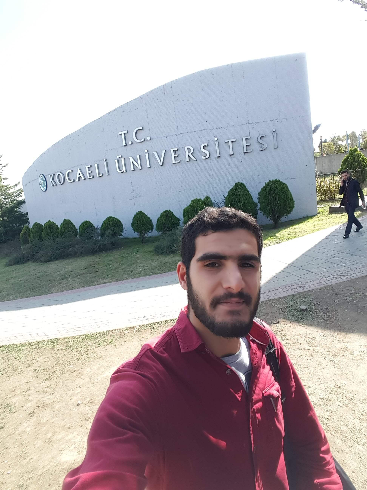
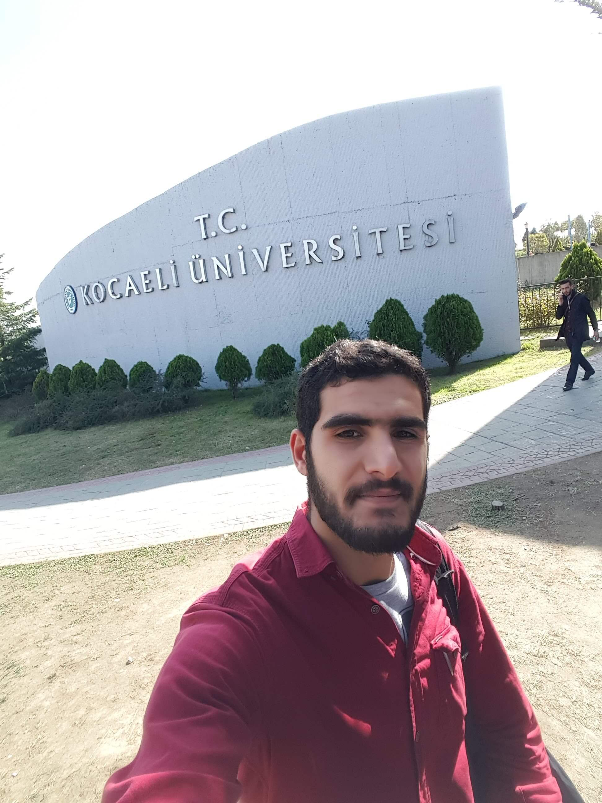
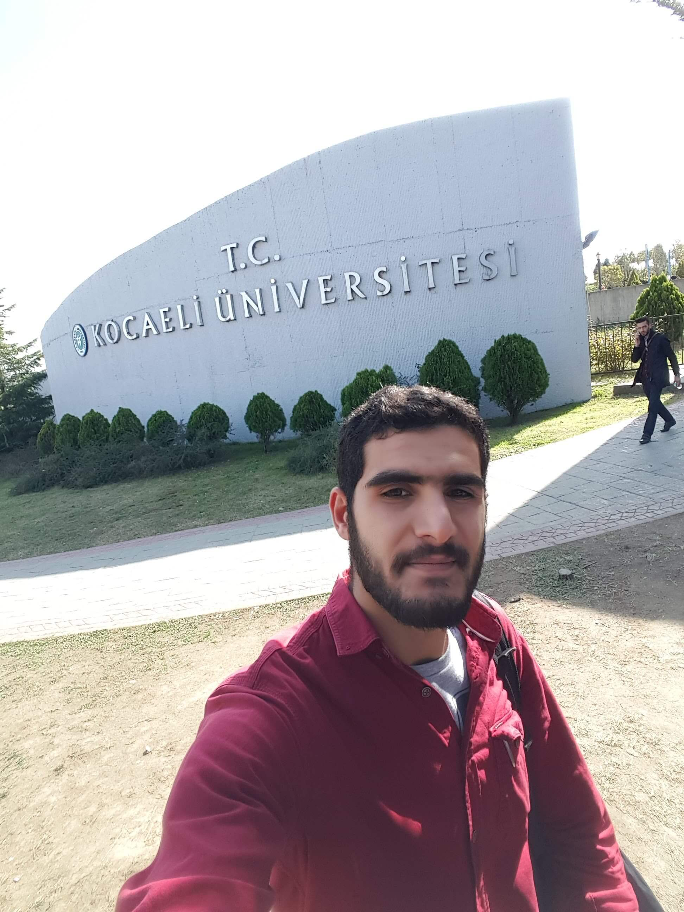
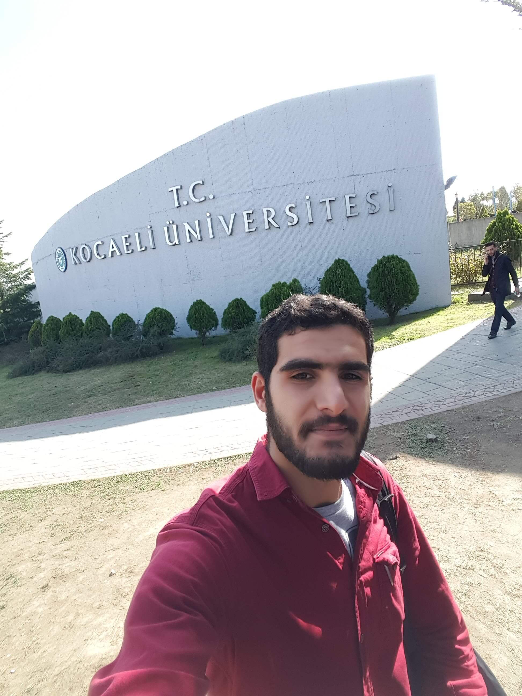

المزيد
 


 

التحقت بالجامعة في عام 2016 بدأت فصلي الدراسي الاول درست سنتان وبعدها اوقفت فيدي في الجامعة سنة
حيث اضطررت للعمل واستئنفت مرة اخرى في عام 2019 وتخرجت في الجامعة عام 2021
عملت على مشروعين في الجامعة مشروع انشاء طريق ومشروع التخرج الذي كان دراسة تحليلية لتاثير الزلالزل
على المباني حيث انشاءت في مشرع التخرج الخاص بي بناء مدرسة مقاوم للزلازل مكون من خمسة طوابق
وقمت بتحليل مدى مقاومته للزلازل بحسب ثلاث طرق (انواع) تحليل
التحليل الخطي
التحليل غير الخطي
وتحليل الزمن الحقيقي
وبناء على هذه التحليلات قمت بتعديل هيكل البناء بحيث يصبح مقاوما للزلازل